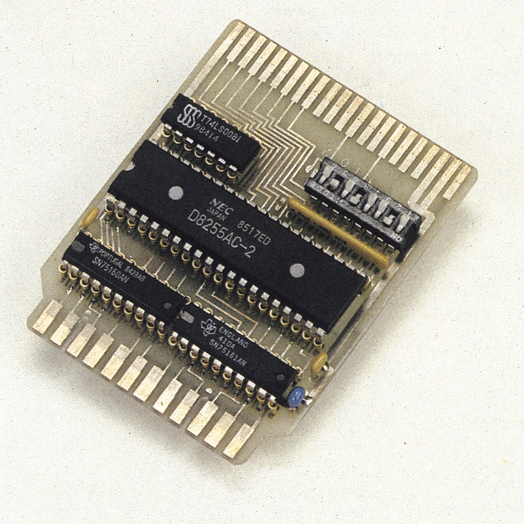
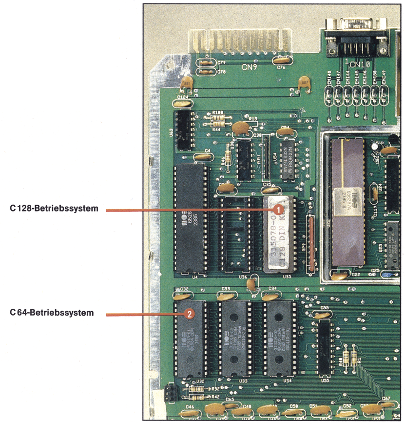
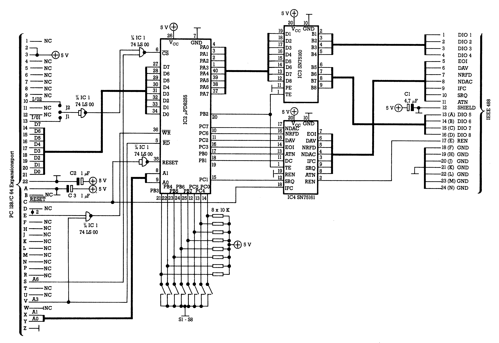
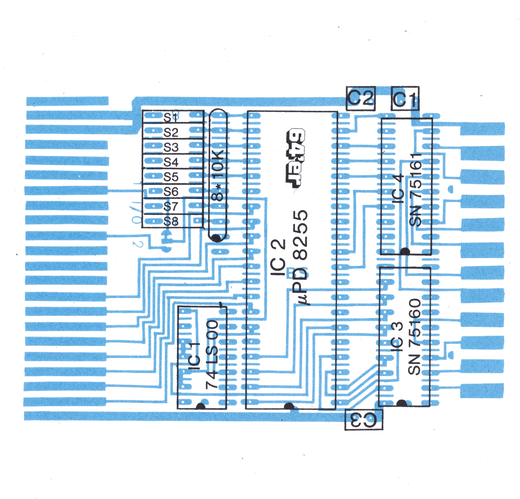
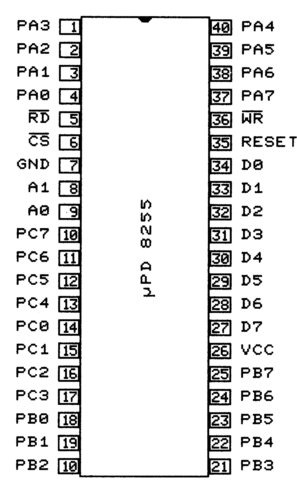
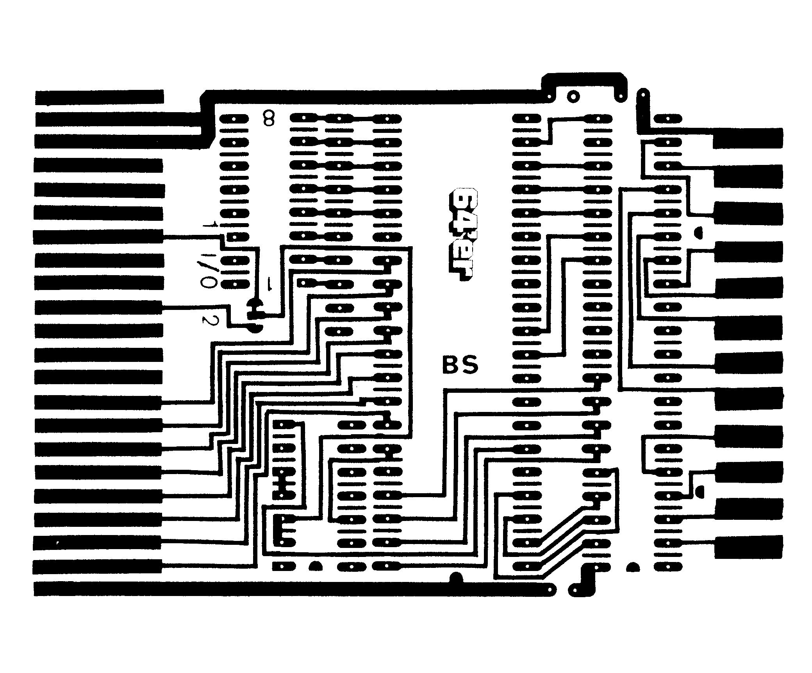
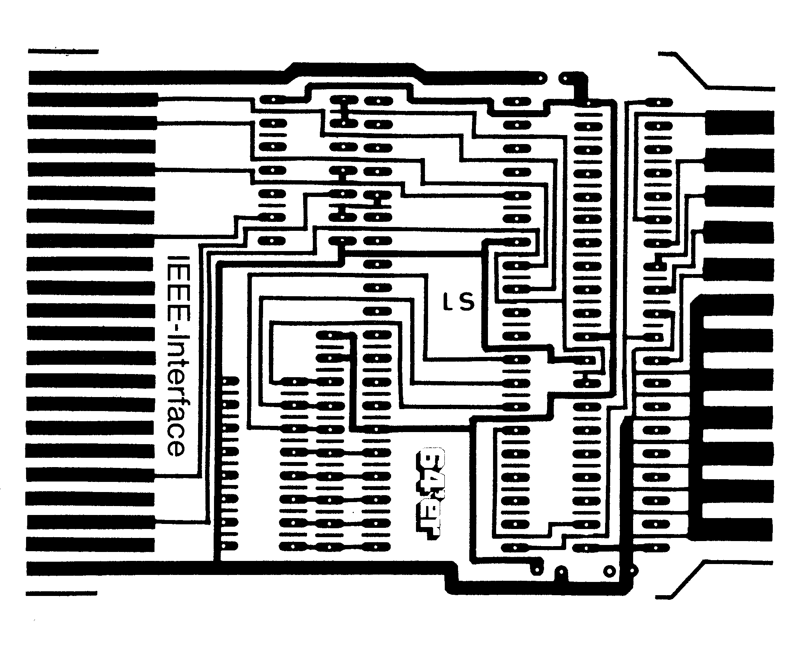
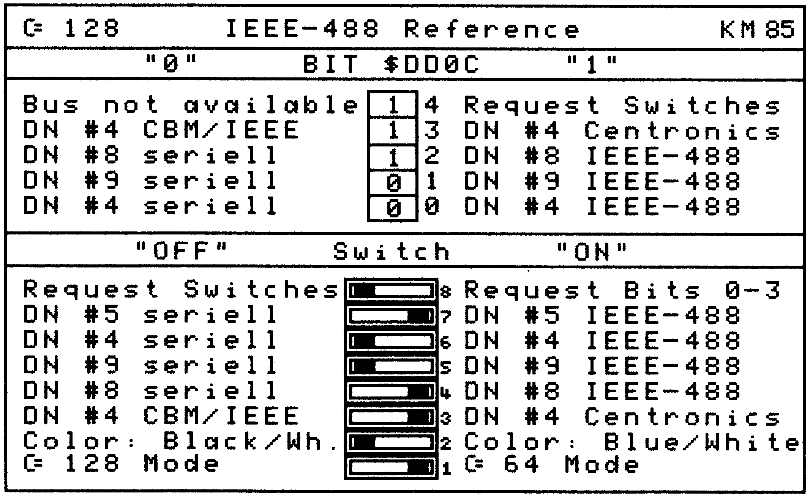
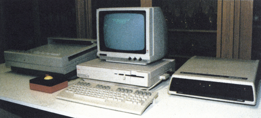

IEEE-Bus für den C 128
Wollen Sie professionelle Peripheriegeräte an Ihren Computer anschließen? Hier finden Sie die notwendige Bauanleitung dafür. Zusätzlich werden eine ganze Menge Extras geboten.
Wozu braucht man überhaupt einen IEEE-488-Bus am C 128? Nun, die Antwort ist sehr einfach. Über ein paralleles IEEE-Bus-Modul können Sie die Drucker und die Diskettenlaufwerke mit erheblich höherer Speicherkapazität aus der Commodore 4000er- und 8000er-Serie anschließen. Interessant ist vor allem das Einzellaufwerk SFD 1001 mit einer Speicherkapazität von 1 MByte und die Doppelfloppy CBM 8250 LP mit 2 x 1 MByte Speicherkapazität. Besonders bei den Laufwerken findet man häufig günstige Angebote (siehe Anzeigenteil).
Schnellere Floppy
Besonders das Floppylaufwerk SFD 1001 weist etliche Vorzüge gegenüber den Laufwerken 1571 und 1541 auf. Im einzelnen sind diese:
- Das Laufwerk 1571 emuliert im C 64-Modus des C 128 die Floppystation 1541 – zumindest, was die Geschwindigkeit angeht. Eine SFD 1001 ist beim Lesen aber fast sechsmal schneller, beim Schreiben etwa dreimal so schnell wie die 1541 und doppelt so schnell wie die 1571 im C 128-Modus. Auch sequentielle und relative Dateien werden entsprechend schneller bearbeitet. Angenehm bemerkbar macht sich die Geschwindigkeitssteigerung auch im CP/M-Betrieb, bei dem häufig auf Diskette zugegriffen wird.
- Die Speicherkapazität der SFD 1001 ist gegenüber der 1541 sechsmal größer. Gegenüber der 1571 beträgt sie immer noch das dreifache. Es treten auch keine Probleme mit den Diskettenformaten 1541/einseitig und 1571/doppelseitig mehr auf.
Wenn Sie eine 1541 am C 128 betreiben, können Sie diese mit Hilfe der in Ausgabe 1/86 vorgestellten IEEE-Platine auf den parallelen Übertragungsstandard umrüsten. Die Vorteile der höheren Übertragungsge schwindigkeit können Sie im C 64-Modus, im C 128-Modus und unter CP/M nutzen.
Ein Modul und zwei EPROMs
Um den IEEE-488-Bus an Ihrem C 128 betreiben zu können, benötigen Sie ein Hardware-Modul (Bild 1) und zwei Betriebssystem-EPROMs.

Das eine EPROM des Typs 27128 beinhaltet das Basic V2 und das modifizierte Betriebssystem für den C 64-Modus. Auf der Programmservice-Diskette zu dieser Ausgabe ist das zum Brennen des EPROMs notwendige Programm enthalten. Sie finden es dort unter dem Namen »IEEE KERN 64«. Im Bild 2 sehen Sie den Platinenausschnitt mit den beiden Betriebssystem-ROMs. Dieses EPROM können Sie direkt an Stelle des mit »2« gekennzeichneten ROMs einsetzen. Ein Adaptersockel ist dabei nicht notwendig.

Das zweite EPROM, ebenfalls ein 27128-Typ mit einer Zugriffszeile von 250 ns, ersetzt das mit »1« gekennzeichnete ROM (Bild 2). Es beinhaltet das neue Betriebssystem für den C 128-Modus. Das notwendige Programm finden Sie ebenfalls auf der Programmservice-Diskette unter »IEEE KERN 128«.
Die beiden EPROMs für die Betriebssysteme sind auf der Stückliste (Tabelle 1) nicht mit aufgeführt. Sie enthält nur die Bauteile für das Hardware-Modul. Auf dieses Modul wollen wir jetzt auch näher eingehen.
| Stückliste |
|---|
| Integrierte Schaltkreise |
| 1 74LS00; IC 1 |
| 1 µPD 8255 AC; IC 2 |
| 1 SN75160; IC 3 |
| 1 SN75161; IC 4 |
| Kondensatoren |
| 1 x 15 µF, Tantal; C1 |
| 2 x 100 nF; C2, C3 |
| Widerstände |
| 1 Array 8 x 10 K; RN 1 |
| Sonstiges |
| 1 8fach DIP-Schalter; S1—S8 |
| 1 IC-Fassung 40polig |
| 2 IC-Fassung 20polig |
| 1 IC-Fassung 14polig |
Die Schaltung
Für eine parallele Datenübertragung nach der IEEE-Norm benötigen Sie eine kleine Platine für den Expansion-Port (Bild 1). Die Schaltung finden Sie im Bild 3.

Der wichtigste Baustein (IC2) ist ein »Programmable Peripheral Interface«, abgekürzt PPI. Dieser Baustein des Typs µPD8255AC kann ohne weiteres mit 2 Megahertz betrieben werden. Geschwindigkeitsprobleme wird es also keine geben. Da IC2 jedoch nicht zur Familie der 65xx-Bausteine gehört, ist eine Anpassung der Steuersignale notwendig. Dies erfolgt über die vier Gatter des 74LS00 (IC1).
Die beiden ICs SN75160 (IC3) und SN75161 (IC4) sind Treiber-Bausteine mit integriertem Widerstandsnetzwerk, wie es nach der IEEE-Norm verlangt wird.
Mit dem 8fach DIL-Schalter wird die Schnittstelle auf Ihre Gerätekonfiguration angepaßt.
Kommen wir aber nochmals zum I/O-Baustein µPD8255. Er wird über den für die Erweiterungen I/O 1 vorgesehenen Adreßbereich $DE00 bis $DEFF angesprochen. Sie können das Modul aber auch auf den Erweiterungsbereich I/O 2 ($DF00 bis $DFFF) verlegen, indem Sie die Brückenverbindung rechts neben den DIP-Schaltern (Bild 4) auftrennen und umlöten.

Von dem neuen Betriebssystem wird allerdings der Bereich I/O 1 angesprochen. Die Software spricht die Register von $DE40 bis $DE43 für Read-Funktionen und die Register von $DE48 bis $DE4B für Write-Funktionen an.
Der µPD8255 besitzt insgesamt drei 8 Bit breite Ports (PA, PB, PC). Im Bild 5 ist der µPD8255 nochmals mit allen Pin-Belegungen abgebildet. Welche der I/O-Anschlüsse als Daten- oder Steuerleitungen verwendet werden und welche mit den DIP-Schaltern geschaltet werden, das finden Sie in der Tabelle 2.

| Zuordnung der I/O-Leitungen | |||
|---|---|---|---|
| Port A | IEEE-488-Datenleitung | Port C | Steuerleitung/Schalter |
| PA0 | DIO1 | PC0 | SW 8 |
| PA1 | DIO2 | PC1 | SRQ |
| PA2 | DIO3 | PC2 | DAV |
| PA3 | DIO4 | PC3 | EOI |
| PA4 | DIO5 | PC4 | SW 7 |
| PA5 | DIO6 | PC5 | SW 6 |
| PA6 | DIO7 | PC6 | NRFD |
| PA7 | DIO8 | PC7 | NDAC |
| Port B | Steuerleitung/Schalter | ||
| PB0 | ATN | ||
| PB1 | DC | ||
| PB2 | TE | ||
| PB3 | SW 1 | ||
| PB4 | SW 2 | ||
| PB5 | SW 3 | ||
| PB6 | SW 4 | ||
| PB7 | SW 5 | ||
Mit den Leitungen TE und DC der Bus-Treiber (IC3, IC4) wird die Datenrichtung und der Zustand des Computers (Controller/Talker/Listener) festgelegt.
Tips für den Aufbau
Um die Schaltung aufzubauen, brauchen Sie eine doppelseitige Platine. Die Platinenlayouts für beide Seiten finden Sie in den Bildern 6 und 7. Die Abmessungen der Platine betragen 59 x 75 mm. Für die Herstellung doppelseitiger Platinen empfiehlt es sich, Folien vom Layout herzustellen, die beiden Folien genau übereinander zu legen und mit Tesa-Film zu einer Art Tasche zusammenzukleben. Stecken Sie dann eine Platine mit Fotoschichten in diese Tasche, lassen Sie diese auf der offenen Taschenseite überstehen und kleben Sie die Platine mit Tesa-Film an der Tasche fest. Nun können Sie die Platine auf beiden Seiten belichten.


An der IEEE-Bus-Seite muß die Platine später auf die Maße des 24poligen Platinensteckers zurechtgesägt werden. Achten Sie auch auf die notwendigen Schlitze. Sie liegen anders als am User-Port! Im Layout (Bestückungsseite) sind kleine, halbkreisförmige Markierungen vorhanden, wo die Schlitze gesägt werden müssen.
Die Durchkontaktierung erfolgt durch doppelseitiges Verlöten der IC-Sockel. Gedrehte Sockelbeinchen ohne Kunststoffrahmen (Carrier-Fassungen), wie sie auf dem Bild 1 zu sehen sind, erleichtern das Löten auf der Bestückungsseite. Sie werden mit einem »Blech-IC« als Träger verkauft. Weitere Durchkontaktierungen sind nicht notwendig.
So schließen Sie Geräte an
An der Platine sind zwei Anschlüsse vorhanden. Mit der 44poligen Seite wird die Platine direkt in den Expansion-Port gesteckt. Die Bestückungsseite zeigt dabei nach oben. Den Commodore-IEEE-488-Bus bildet der 24polige Anschluß mit den beiden Schlitzen (siehe Bild 1). Über ein Commodore-IEEE-488-Bus-Kabel können Sie die Peripheriegeräte der Serien 4000 und 8000 anschließen. Eine Gegenüberstellung der Pinbelegung des Commodore-IEEE-488-Anschlusses und des 24poligen IEEE-488-Normsteckers finden Sie in der Tabelle 3.
| Steckerbelegung CBM-IEEE und Standard-IEEE | ||
|---|---|---|
| Kontaktbenennung CBM | Standard-IEEE | Bezeichnung des Pins |
| 1 | 1 | DIO1 |
| 2 | 2 | DIO2 |
| Schlitz | ||
| 3 | 3 | DIO3 |
| 4 | 4 | DIO4 |
| 5 | 5 | EOI |
| 6 | 6 | DAV |
| 7 | 7 | NRFD |
| 8 | 8 | NDAC |
| 9 | 9 | IFC |
| Schlitz | ||
| 10 | 10 | SRQ |
| 11 | 11 | ATN |
| 12 | 12 | GND |
| A | 13 | DIO5 |
| B | 14 | DIO6 |
| Schlitz | ||
| C | 15 | DIO7 |
| D | 16 | DIO8 |
| E | 17 | REN |
| F | 18 | GND (DAV) |
| H | 19 | GND (NRFD) |
| J | 20 | GND (NDAC) |
| K | 21 | GND (IFC) |
| Schlitz | ||
| L | 22 | GND (SRQ) |
| M | 23 | GND (ATN) |
| N | 24 | GND (DIO1-8) |
Daten seriell und parallel
Der Datenverkehr mit den Peripheriegeräten kann seriell und parallel erfolgen. Unter der gleichen Gerätenummer kann ein Gerät seriell angesprochen werden und ein zweites parallel. Auf diese Weise ist es möglich, zwei Floppylaufwerke zu betreiben, ohne die Gerätenummer zu ändern.
Die Art des Zugriffs (seriell oder parallel) können Sie entweder softwaremäßig über ein Register oder mit den DIP-Schaltern bestimmen. Mit dem DIP-Schalter 8 wird eine der beiden Varianten vorgegeben. Ein Wechsel der Zugriffsart ist auch während dem Betrieb möglich.
Die Übersicht, was mit welchem Schalter eingestellt wird, finden Sie in der Tabelle 4 unter »Switch«. In der Mitte ist eine gängige Schalterkombination abgebildet. Die Bedeutung der einzelnen Schalter wollen wir Ihnen aber auch noch genauer erklären.

Schalter 1 invertiert die Funktion der Taste <CBM> nach dem Einschalten und nach einem Reset. Setzen Sie Schalter 1 auf »ON«, so gelangen Sie nach dem Einschalten in den C 64-Modus, ohne die Taste <CBM> zu drücken. Haben Sie diese Taste gedrückt, meldet sich der Computer im C 128-Modus.
Schalter 2 legt die Farben des 40-Zeichen-Bildschirms fest. Im C 128-Modus können Sie zwischen schwarz/weiß und blau/weiß wählen. Im C 64-Modus stehen die Kombinationen schwarz/grau oder blau/grau zur Verfügung.
Ist Schalter 3 auf »ON« gestellt, erfolgt die Datenausgabe für die Gerätenummer 4 (Drucker) über eine Centronics-Schnittstelle am User-Port. Die FLAG-Leitung wird dabei als »Acknowledge« und die PA2-Leitung als »Strobe« verwendet. Wenn Sie im OPEN-Befehl die Sekundäradresse 0 wählen, werden alle Zeichen im »CBM-ASCII-Code« ohne eine Codewandlung ausgegeben. Mit der Sekundäradresse 7 wird eine Wandlung der Klein-/Großschrift durchgeführt. Die Codewandlung erfolgt bis zum Zeichen CHR$(95).
Steht der Schalter 3 auf »OFF«, so wird über die Gerätenummer 4 nicht der User-Port angesprochen, sondern der serielle oder parallele Bus.
Die Schalter 4 bis 7 bestimmen die Art des Zugriffs für die Gerätenummern 4, 5, 8 und 9. Dabei bedeutet »OFF« seriell und »ON« parallel.
Der Schalter 8 trägt die Bezeichnung »Request Switches?« (Schalter abfragen?). Im Zustand »ON« werden die übrigen Schalter im Betrieb abgefragt. Im Zustand »OFF« werden die entsprechenden Bits des Registers $DD0C abgefragt.
Einstellung per Software
Um eine softwaremäßige Einstellung zu erreichen, wird das serielle Schieberegister ($DD0C) des CIA-Bausteins 2 benutzt. Die Bedeutung der einzelnen Bits finden Sie als Übersicht ebenfalls in der Tabelle 4. In der Mitte dieses Tabellenabschnittes ist wiederum die gängigste Bit-Kombination angegeben. Wie bei den Schaltern wollen wir Ihnen auch hier die einzelnen Bits noch einmal genau erklären.
Die Bits 0, 1 und 2 bestimmen die Art des Zugriffs für die Gerätenummern 4, 8 und 9. Bei gelöschtem Bit wird der serielle Bus, bei gesetztem Bit der parallele Bus verwendet.
Bit 3 bestimmt, ob die Gerätenummer 4, die Centronics-Schnittstelle, angesprochen wird. Bei gesetztem Bit läuft die Datenausgabe über den User-Port (Centronics). Bei gelöschtem Bit 3 entscheidet das Bit 0 über die Art der Ausgabe. Bit 3 hat also Vorrang vor Bit 0.
Mit Bit 4 können Sie das Modul als »nicht vorhanden« (Bus not available) schalten. Dazu braucht nur Bit 4 gelöscht werden. Im Normalfall ist das Bit bei eingestecktem Modul gesetzt. Nach dem Einschalten wird dieses Bit überprüft, bevor die Schalter abgefragt werden. Es hat also die höchste Priorität. Fehlt das Modul nach dem Einschalten, so werden die Bits 0 bis 3 vom Betriebssystem gelöscht. Bit 4 kann auch benutzt werden, um eine Schalterabfrage softwaremäßig zu unterdrücken.
Die Bits 5 bis 7 dürfen Sie nicht benutzen, da sie vom Betriebssystem verwendet werden. Aus diesem Grund sollten Sie die einzelnen Bits (0 bis 4) von Basic aus mit folgendem Befehl setzen:
POKE56588, (PEEK(56588) OR X)
Anstelle X werden je nach Bit die Werte 1, 2, 4, 8 oder 16 eingesetzt.
Die Bedeutung von Bit 5 wollen wir Ihnen aber auch erläutern. Das Floppylaufwerk SFD 1001 reagiert beim Befehl »I« (Initialisierung der Diskette) mit einer Fehlermeldung: READ ERROR auf Drive 1. Dies liegt daran, daß für die SFD 1001 das DOS 2.7 der Doppelfloppy 8250 nahezu unverändert übernommen wurde. Die 8250 initialisiert bei dem Befehl »I« beide Laufwerke (Drive 0 und 1). Will man ein einzelnes Laufwerk initialisieren, so ist der entsprechende Befehl »I0« oder »I1«. Nur bei dem korrekten Befehl »I0« gibt die SFD 1001 keine Fehlermeldung aus. Viele Programme verwenden aber den Sparbefehl »I« anstatt »I0« und fragen daraufhin den Fehlerkanal ab. Aus diesem Grund sendet das Betriebssystem bei dem Befehl »I« auch die dazugehörige »0« hinterher. Ein »Abstürzen« eines Programms aufgrund dieses Fehlers wird so vermieden. Wollen Sie dennoch beide Laufwerke gleichzeitig initialisieren, dann verwenden Sie dazu bitte den Befehl »I:«.
Am meisten wird wohl die Umschaltung der Zugriffsart seriell/parallel für die Gerätenummer 8 benötigt. Hier existiert neben dem Einstellen des Schalters 4 oder dem Setzen und Löschen des zweiten Bits eine dritte Möglichkeit. Durch gleichzeitiges Drücken der Tasten <CTRL + RETURN> wird das Bit 4 auf Null gesetzt und Bit 2 umgekehrt. Dies hat folgende Wirkung: Ein gelöschtes Bit 4 erlaubt die Abfrage der internen Bits anstelle der Schalter. Das Bit 2 (zuständig für die Gerätenummer 8) wird umgekehrt und damit der Zugriff von seriell auf parallel (oder umgekehrt) umgeschaltet. Diese Abfrage ist in der INPUT-Routine eingebunden. Sie können also während eines INPUT-Befehls die Übertragungsart für die Gerätenummer 8 ändern. Eine nützliche Hilfe.
Die Geräteadressen 10 und 11 bewirken übrigens stets eine serielle Übertragung, während 12 bis 15 eine parallele Übertragung bewirken.
Betriebssystem verbessert
Die Treibersoftware für den IEEE-488-Bus ist sowohl im C 64- wie im C 128-Betriebssystem eingebunden. Zu diesem Zweck mußten die Kassettenroutinen entfernt werden. Die RS232-Treiberroutinen unter der Gerätenummer 2 bleiben erhalten.
Sie sollten allerdings nicht mit Übertragungsraten über 1200 Bit/s arbeiten, wenn Sie gleichzeitig den parallelen Bus benutzen.
Im einzelnen sind im C 64-Modus folgende Verbesserungen implementiert:
- <CTRL+*> bewirkt ein »OLD« für ein Basic-Programm nach einem NEW oder Reset.
- <CTRL+DEL> löscht von der aktuellen Cursor-Position den Rest der Zeile.
- Die linke <SHIFT>-Taste oder die Taste <SHIFT LOCK> bewirken eine Pausenfunktion für das Bildschirm-Scrolling. Die Ausgabe wird gestoppt, wenn eine neue Zeile am unteren Rand aufgebaut werden soll.
- Die im Betriebssystem voreingestellte Gerätenummer für »LOAD« und »SAVE« ist von 1,1 (Kassette) auf 8,1 (Floppy) umgestellt worden. Davon unabhängig wird das Inhaltsverzeichnis mit 8,0 geladen.
- Die Programmkennzeichnung »PRG« in einem Directory-Listing auf dem Bildschirm muß bei einem LOAD-Befehl nicht mehr beachtet werden. Es genügt, vor den Programmnamen ein »LOAD« zu schreiben und <RETURN> zu drücken.
- Die Default-Nummer für den OPEN-Befehl ist auf x,8,15 gesetzt. Zum Öffnen des Befehlkanals der Floppystation genügt jetzt ein »OPEN1«.
- Die Repeat-Funktion für die Tastatur ist eingeschaltet.
- Die Tastenkombination <CTRL+←> schaltet den Quote-Mode (Gänsefüßchenmodus) ab. So können Sie dem Quote-Mode entkommen, ohne die Cursor-Position zu ändern.
- Die Tastenfolge <CBM+RUN/STOP> ergibt ein »RUN:«
- <SHIFT+RUN/STOP> bewirkt das Laden und Starten des ersten Programms vom Diskettenlaufwerk (LOAD"0:* ":RUN).
- Die Tastenkombination <F1+F3+DEL> unterdrückt die Ausführung des Autostart-Codes »cbm80« beim Reset oder Einschalten. Reset-feste Programme können Sie so verlassen.
- <F1+DEL> wandelt beim Reset den Autostart-Code »cbm80« im RAM bei $8004 bis $8008 in »ibm80« um. Im Gegensatz zur Methode <F1+F3+DEL> ist danach ein NMI-Warmstart des Computers (<RUN/STOP+RESTORE>) möglich.
- Die neuen Cursor-Steuertasten der C 128-Tastatur funktionieren auch im C 64-Modus.
- Der Zehnerblock des C 128 ist auch im C 64-Modus zugänglich. Die Tasten liefern den gleichen Code wie die entsprechenden Tasten der normalen C 64-Tastatur. Dies gilt auch im SHIFT-Modus.
- Die Funktion der zusätzlichen Tasten des C 128 für den C 64-Modus können Sie der Tabelle 5 entnehmen. Die übrigen Zusatztasten bleiben ohne Funktion.
| Tastencodes im C 64-Modus | ||
|---|---|---|
| ESC | liefert | CHR$(27) |
| TAB | liefert | CHR$(09) |
| ALT | liefert | CHR$(14) |
| HELP | liefert | CHR$(08) |
| LINE-FEED | liefert | CHR$(10) |
| NO SCROLL | liefert | CHR$(03) |
In Bild 8 sehen Sie den C 128 D gemeinsam mit einem Doppellaufwerk 8250 LP im Einsatz. Alle, die sich den Selbstbau nicht zutrauen, können das fertige IEEE-Interface auch bei Roßmöller, Maxstraße 50 - 52, 5300 Bonn 1, für 198 Mark erhalten.
(K. Mandelatz/kn)